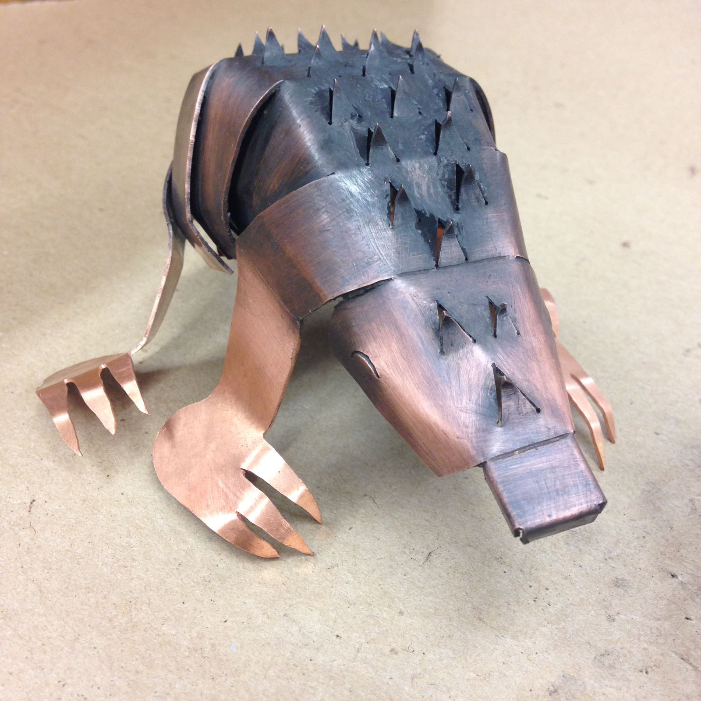
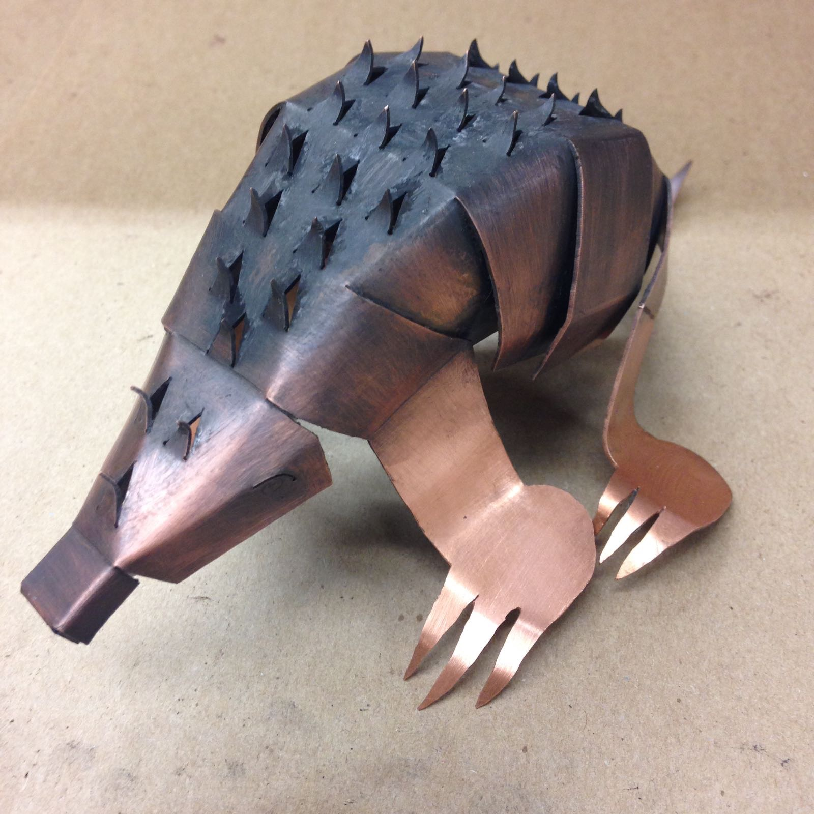
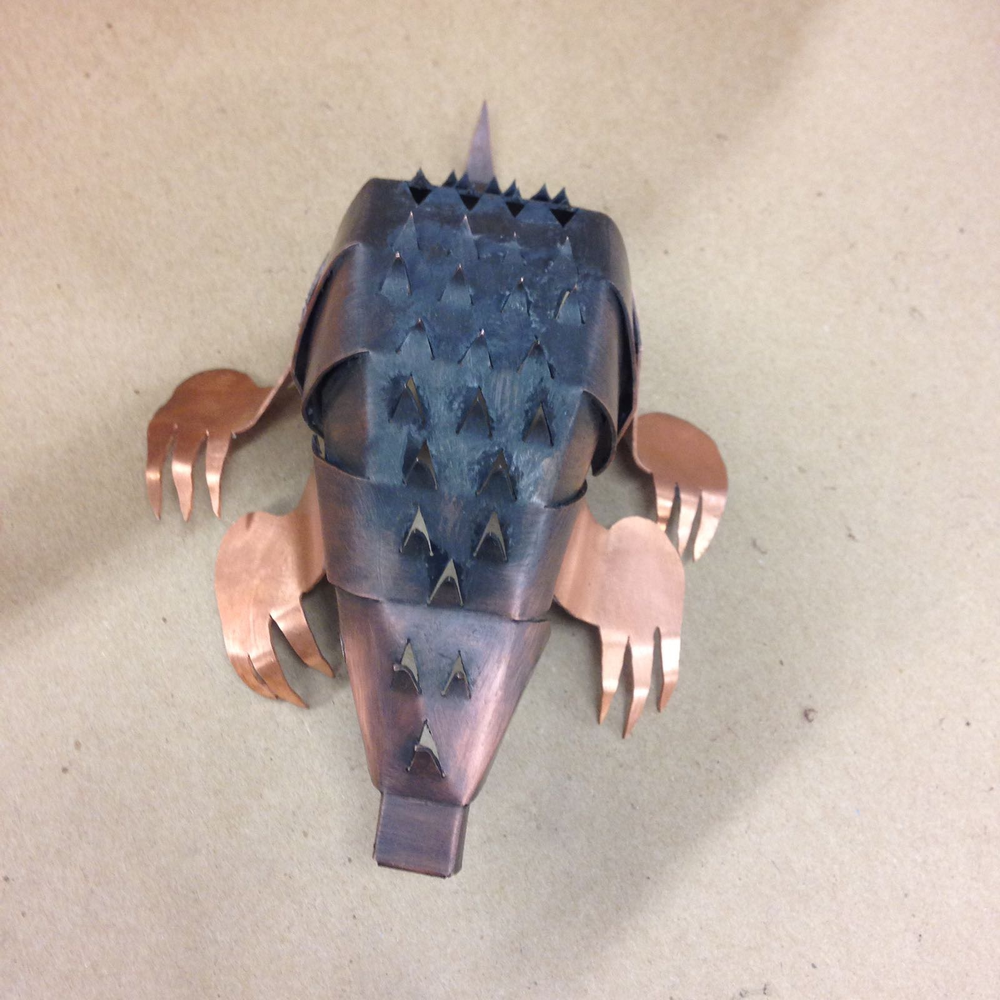
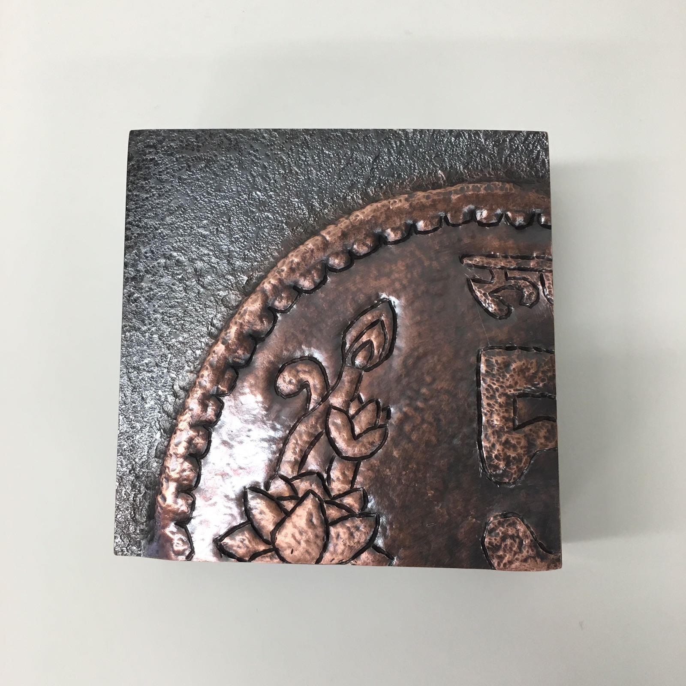
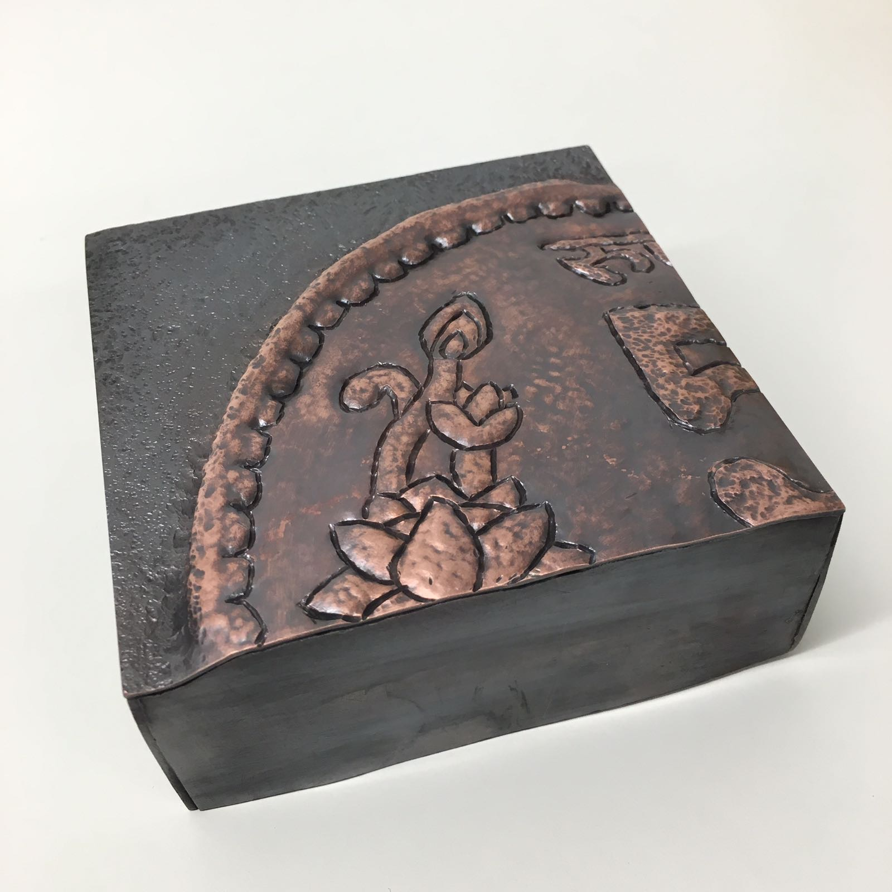
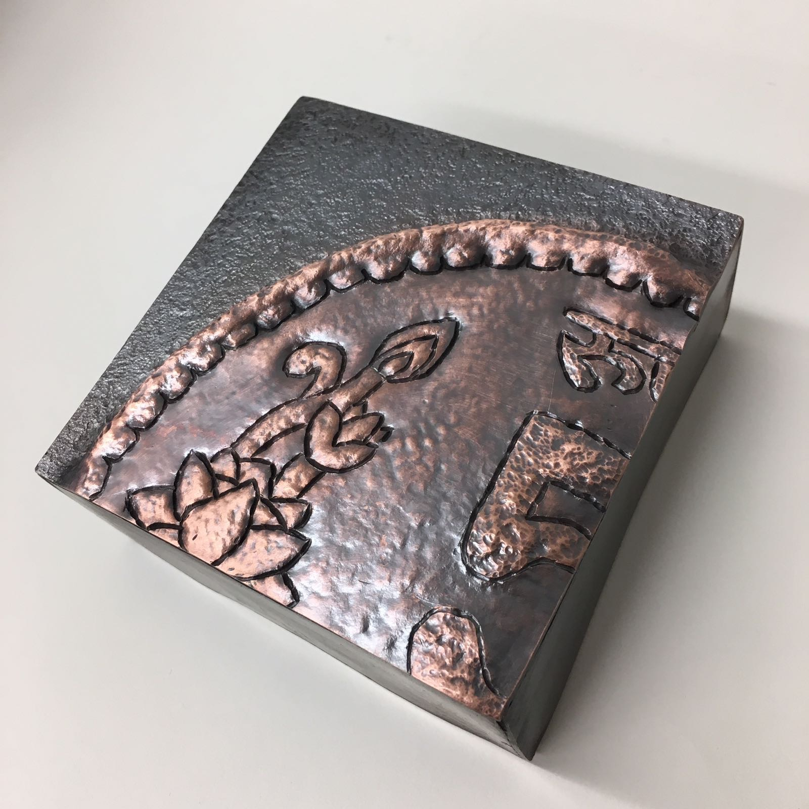

This hybrid animal is made entirely of copper sheet that was bent up and pierced to create a 3D figure. It is inspired by both an armadillo and a porcupine, hence, the name.
  This piece is made to predict your death. It is a satirical play on how everyone is afraid of dying, but don’t live to the fullest either. It uses the reader’s favorite food, color and their horoscope to predict the time they have left. It is made of copper, cold joined together and etched.
This piece is a direct representation of the a Five Rupee coin from India. It is made of hammered and textured copper.
  